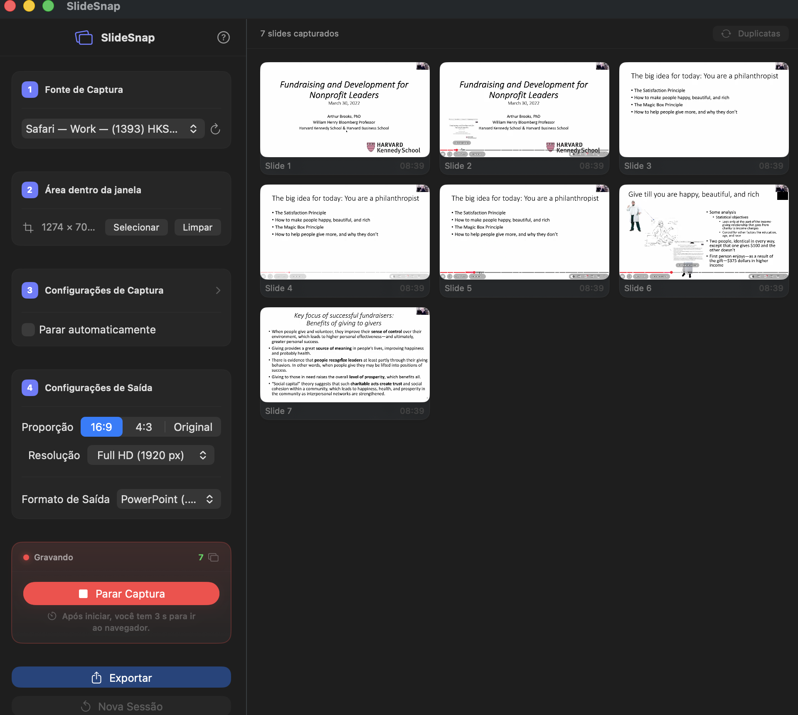
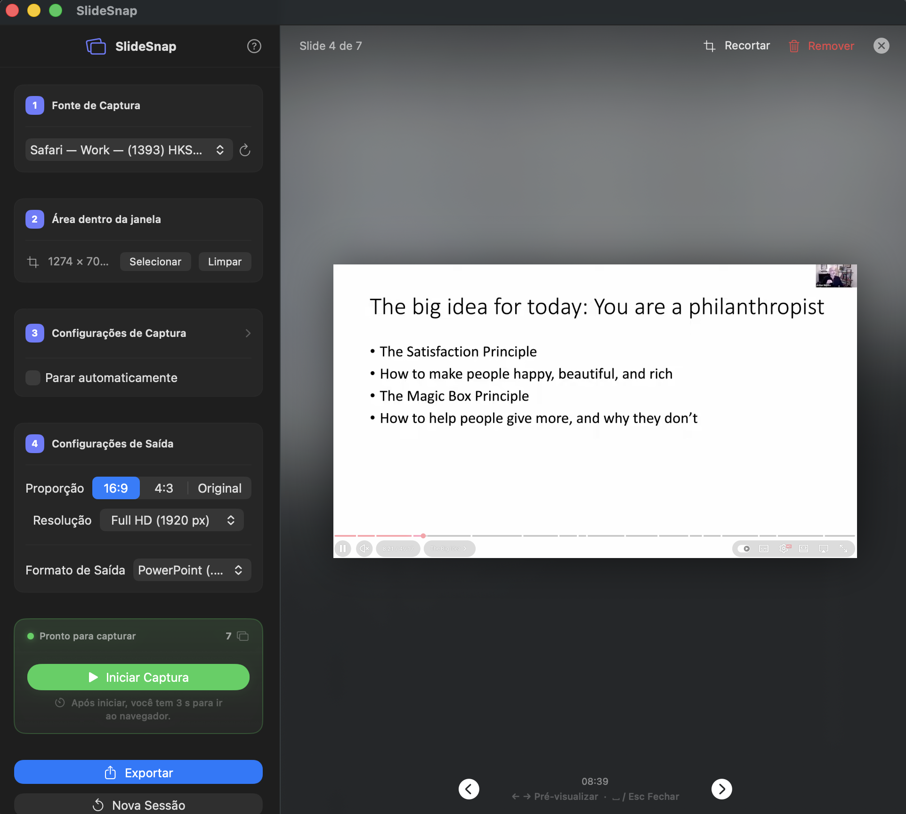
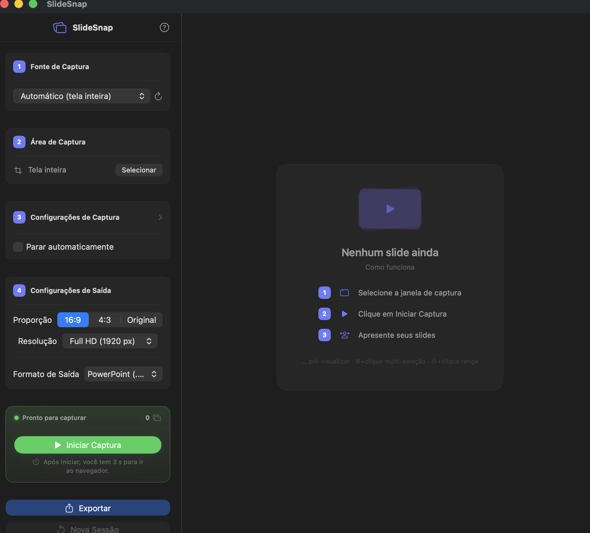

O SlideSnap detecta automaticamente quando o slide muda e salva cada um para você. Mantenha o foco em aulas, palestras e webinars — e revise tudo depois.
Desenvolvido para quem assiste apresentações e precisa manter o foco — não ficar tirando screenshots manualmente.
Detecta cada mudança de slide em tempo real e captura automaticamente, sem interromper sua atenção. Ajuste o intervalo e a sensibilidade.
Algoritmo de comparação visual descarta frames repetidos. Você recebe apenas slides únicos, prontos para revisar.
PowerPoint (.pptx), PDF, ou pasta de imagens. Escolha o formato certo para editar, compartilhar ou arquivar.
Interface em Português, English, Español, Français e Deutsch. Muda de idioma em tempo real, sem reiniciar.
Nenhum dado sai do seu Mac. Sem conta, sem nuvem, sem assinatura. Funciona completamente offline.
Recorte, reorganize e remova slides individuais antes de exportar. Tudo dentro do app, sem precisar de outro software.
Capture os slides do professor e revise no seu ritmo, sem desviar o foco durante a aula.
Acompanhe congressos, simpósios e atualizações clínicas sem deixar de prestar atenção ao palestrante.
Registre automaticamente as apresentações de seminários e conferências para referência futura.
Extraia insights de webinars e treinamentos corporativos sem precisar tomar notas manualmente.
Leve para casa cada slide de cada palestra — sem tirar foto de tela ou se distrair.



Do início ao arquivo exportado, leva menos de um minuto de configuração.
Selecione a janela da apresentação ou defina uma região específica da tela para monitorar.
Clique em Iniciar e preste atenção na aula. O SlideSnap captura cada slide automaticamente em segundo plano.
Ao terminar, exporte como PPTX, PDF ou imagens. Pronto para estudar, compartilhar ou arquivar.
Disponível na Mac App Store para macOS 13.5 ou superior.
Baixar na App Store